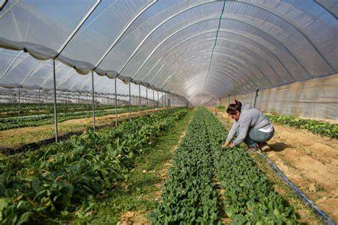
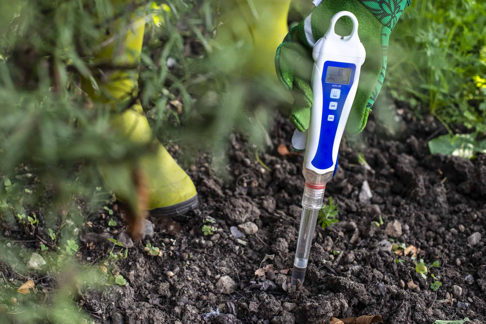
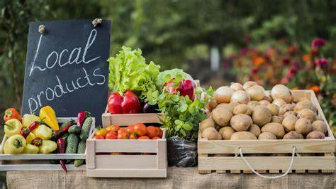

Featured Tutorial

Drip Irrigation: Save Water & Increase Yield
Learn how to implement drip irrigation techniques that can save up to 60% water while improving crop yield by 20-50%.
PMKSY
Water Conservation
Watch Now
Browse by Category

Sustainable Farming
15 tutorials

Organic Methods
12 tutorials
Water Management
8 tutorials
Latest Tutorials

Soil Testing Methods
Learn how to test your soil quality using simple techniques and government resources.
Soil Health Card
35 min
Watch Now

Modern Crop Rotation
Scientific approaches to crop rotation that improve soil health and increase yield.
NFSM
42 min
Watch Now

Digital Marketing for Farmers
How to sell your produce directly to consumers using online platforms.
E-NAM
28 min
Watch Now